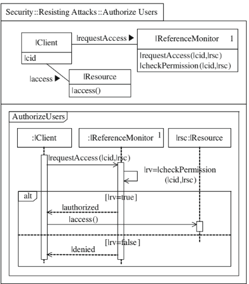
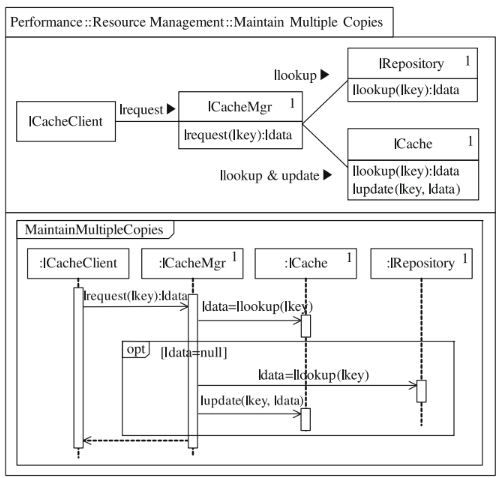
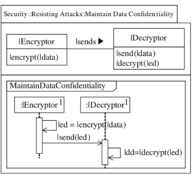

<!DOCTYPE html>
<html lang="en">
<head>
    <meta charset="UTF-8">
    <meta name="viewport" content="width=device-width, initial-scale=1.0">
    <title>Guide & Documentation</title>
    <script src="https://cdn.tailwindcss.com"></script>
    <!-- Add FontAwesome -->
    <link rel="stylesheet" href="https://cdnjs.cloudflare.com/ajax/libs/font-awesome/6.0.0/css/all.min.css">
    <style>
        /* Golden icons style */
        .gold-icon {
            color: #f9d74f;
            text-shadow: 0 0 8px rgba(227, 183, 10, 0.7);
            transition: all 0.3s ease;
        }
        .gold-icon:hover {
            transform: scale(1.1);
            text-shadow: 0 0 12px rgba(238, 204, 71, 0.9);
        }
        
        /* Learn More button style */
        .learn-more-btn {
            display: inline-block;
            background: linear-gradient(135deg, #FFD700, #f5c542);
            color: #111;
            padding: 10px 18px;
            border-radius: 30px;
            font-size: 0.9rem;
            font-weight: 600;
            transition: all 0.3s ease;
            box-shadow: 0 4px 10px rgba(255, 215, 0, 0.3);
            text-decoration: none;
        }
        
        .learn-more-btn i {
            margin-left: 8px;
            transition: transform 0.3s ease;
        }
        
        .learn-more-btn:hover {
            background: linear-gradient(135deg, #f9dd52, #ffd700);
            box-shadow: 0 6px 20px rgba(255, 215, 0, 0.5);
        }
        
        .learn-more-btn:hover i {
            transform: translateX(4px);
        }
    </style>
</head>
<body class="bg-[#232323] text-white">

    <div class="max-w-5xl mx-auto p-6">
        <h1 class="text-3xl font-bold text-center mb-6 text-[#e3b70a]">
         
            <div class="absolute top-4 right-4">
                <button onclick="window.location.href='guide.html'" class="bg-[#e3b70a] text-black px-3 py-1 rounded-md hover:bg-yellow-500 text-sm">
                    FR
                </button>
            </div>
             <button onclick="goBack()" class="fixed bottom-4 left-4 bg-[#e3b70a] text-black px-3 py-1 rounded-md hover:bg-yellow-500 text-sm">
                ← Back 
            </button>
           
        
            <i class="fas fa-book-open gold-icon"></i> Guide & Documentation
        </h1>

        <!-- Introduction -->
        <section class="mb-8">
            <h2 class="text-2xl font-semibold mb-4 text-[#e3b70a]">
                <i class="fas fa-map-pin gold-icon"></i> Introduction
            </h2>
            <p class="text-gray-300">
                This guide provides a detailed explanation of the concepts used in trace analysis 
                and the detection of architectural tactics.
            </p>
        </section>

        <!-- Terminology -->
        <section class="mb-8">
            <h2 class="text-2xl font-semibold mb-4 text-[#e3b70a]">
                <i class="fas fa-search gold-icon"></i> Terminology
            </h2>
            <ul class="list-disc list-inside text-gray-300">
                <li><b>Execution Trace:</b> Sequence of calls between software components.</li>
                <li><b>Architectural Tactic:</b> Strategy used to address a non-functional requirement.</li>
                <li><b>XPG Grammar:</b> Language used to describe the syntactic structure of a trace.</li>
                <li><b>UML Sequence Diagram:</b> Graphical representation of interactions between objects.</li>
            </ul>
        </section>

        <!-- UML Sequence Diagrams -->
        <section class="mb-8">
            <h2 class="text-2xl font-semibold mb-4 text-[#e3b70a]">
                <i class="fas fa-project-diagram gold-icon"></i> UML Sequence Diagrams
            </h2>
            <p class="text-gray-300">UML diagrams allow visualization of interactions between components.</p>
            
        </section>

        <!-- XPG Grammar -->
        <section class="mb-8">
            <h2 class="text-2xl font-semibold mb-4 text-[#e3b70a]">
                <i class="fas fa-scroll gold-icon"></i> XPG Grammar
            </h2>
            <p class="text-gray-300 mb-4">The XPG grammar allows analyzing a trace and extracting specific patterns.</p>
            <div class="bg-gray-700 p-4 rounded-md text-gray-300 font-mono">
                <pre>
  Example:

(1) PingEchoPattern → MethodInv <same_caller, call+1> OptBlock MethodInv'
(2) OptBlock → epsilon (this means the block may not exist, it is optional)
(3) OptBlock → MethodInv'' <call, same_callee> MethodInv'''
(4) MethodInv → Caller: OBJ.METHOD_SIGNATURE Callee: OBJ'.METHOD_SIGNATURE'
Δ: { MethodInv_caller = OBJ; MethodInv_callee = OBJ';
 MethodInv_method_caller = METHOD_SIGNATURE;
 MethodInv_method_callee = METHOD_SIGNATURE'}
                </pre>
            </div>
        </section>

        <!-- Execution Traces -->
        <section class="mb-8">
            <h2 class="text-2xl font-semibold mb-4 text-[#e3b70a]">
                <i class="fas fa-map-pin gold-icon"></i> Execution Traces
            </h2>
            <p class="text-gray-300 mb-4">
                An execution trace is a sequence of events capturing the interaction between system components. 
                It allows analyzing the program's behavior in real-time and detecting potential anomalies.
            </p>
            <h3 class="text-xl font-semibold mb-2 text-[#e3b70a]">
                <i class="fas fa-eye gold-icon"></i> How to Interpret a Trace?
            </h3>
            <p class="text-gray-300 mb-4">
                Interpreting a trace involves analyzing the relationships between method calls. 
                Identify who calls whom, which methods are invoked, and in what order.
            </p>
            <h3 class="text-xl font-semibold mb-2 text-[#e3b70a]">
                <i class="fas fa-file-alt gold-icon"></i> Example of CALLER/METHOD/CALLEE Trace
            </h3>
            <div class="bg-gray-700 p-4 rounded-md text-gray-300 font-mono">
                <pre>
CALLER: UserController, METHOD: login, CALLEE: AuthService;
CALLER: AuthService, METHOD: validateUser, CALLEE: Database;
CALLER: Database, METHOD: checkCredentials, CALLEE: null;
                </pre>
            </div>
        </section>

        <!-- Architectural Tactics -->
        <section class="mb-8">
            <h2 class="text-2xl font-semibold mb-4 text-[#e3b70a]">
                <i class="fas fa-tools gold-icon"></i> Architectural Tactics
            </h2>
            <div class="space-y-4">
                <div class="bg-gray-700 p-4 rounded-md">
                    <button class="faq-question w-full text-left font-semibold text-[#ffffff]" onclick="toggleFAQ(0)">
                        <i class="fas fa-satellite-dish gold-icon"></i> Ping Echo
                    </button>
                    <div class="faq-answer hidden mt-2 text-gray-300">
                        <p>
                            The Ping Echo tactic verifies the availability and responsiveness of a service or system component.  
                            A "ping" message is sent to a target, which must respond with an "echo" message.  
                            This is commonly used for monitoring networks and distributed systems.
                        </p>
                        
                    </div>
                </div>

                <div class="bg-gray-700 p-4 rounded-md">
                    <button class="faq-question w-full text-left font-semibold text-[#ffffff]" onclick="toggleFAQ(1)">
                        <i class="fas fa-key gold-icon"></i> Authorize Users
                    </button>
                    <div class="faq-answer hidden mt-2 text-gray-300">
                        <p>
                            This tactic ensures that only authorized users can access secure resources in a system.  
                            It relies on authentication mechanisms (passwords, biometrics, tokens) and access control (roles, permissions).  
                            It is essential for ensuring data confidentiality and security.
                        </p>
                        
                    </div>
                </div>

                <div class="bg-gray-700 p-4 rounded-md">
                    <button class="faq-question w-full text-left font-semibold text-[#ffffff]" onclick="toggleFAQ(2)">
                        <i class="fas fa-copy gold-icon"></i> Maintain Multiple Copies
                    </button>
                    <div class="faq-answer hidden mt-2 text-gray-300">
                        <p>
                            This tactic involves storing multiple copies of data to improve reliability and fault tolerance.  
                            It is used in backup systems, replicated databases, and distributed storage architectures.  
                            It allows quick recovery of information in case of server or disk failure.
                        </p>
                        
                    </div>
                </div>

                <div class="bg-gray-700 p-4 rounded-md">
                    <button class="faq-question w-full text-left font-semibold text-[#ffffff]" onclick="toggleFAQ(3)">
                        <i class="fas fa-database gold-icon"></i> Maintain Data
                    </button>
                    <div class="faq-answer hidden mt-2 text-gray-300">
                        <p>
                            This tactic ensures data integrity and availability by applying validation and error correction mechanisms.  
                            It is used to prevent data corruption and ensure accuracy over time.  
                            Techniques like checksums, versioning, and data redundancy are often employed.
                        </p>
                        
                    </div>
                </div>
            </div>
            
            <!-- Learn More button -->
            <div class="text-right mt-6">
                <a href="learning.html" class="learn-more-btn">
                    Learn More <i class="fas fa-arrow-right"></i>
                </a>
            </div>
        </section>

        <!-- JavaCC and Syntax Analysis -->
        <section class="mb-8">
            <h2 class="text-2xl font-semibold mb-4 text-[#e3b70a]">
                <i class="fas fa-code gold-icon"></i> JavaCC and Syntax Analysis
            </h2>
            <p class="text-gray-300">
                This section explains why JavaCC is a relevant choice for syntax analysis and how it automates the detection of architectural tactics in execution traces.
            </p>
            <h3 class="text-xl font-semibold mb-2 text-[#e3b70a]">
                <i class="fas fa-info-circle gold-icon"></i> JavaCC Overview
            </h3>
            <p class="text-gray-300">
                → JavaCC (Java Compiler Compiler) is a parser generator for Java.<br>
                → It allows defining a grammar to describe the structure of data to be analyzed.<br>
                → Widely used for building parsers, especially for analyzing code or logs.
            </p>
            <h3 class="text-xl font-semibold mb-2 text-[#e3b70a]">
                <i class="fas fa-cogs gold-icon"></i> Parser Explanation for Trace Analysis
            </h3>
            <p class="text-gray-300">
                → In this project, JavaCC is used to analyze execution traces and identify specific patterns.<br>
                → The parser transforms the call sequence (CALLER → METHOD → CALLEE) into structured data.<br>
                → It enables automatic extraction of useful information without manual intervention.
            </p>
        </section>

        <!-- References and Resources -->
        <section class="mb-8">
            <h2 class="text-2xl font-semibold mb-4 text-[#e3b70a]">
                <i class="fas fa-book gold-icon"></i> References and Resources
            </h2>
            <div class="space-y-4 bg-gray-700 p-4 rounded-md text-gray-300">
                <h3 class="font-semibold text-[#e3b70a]">
                    <i class="fas fa-file-alt gold-icon"></i> JavaCC Documentation
                </h3>
                <ul class="list-disc list-inside">
                    <li><a href="https://javacc.org/" target="_blank" class="text-blue-400 hover:underline">Official JavaCC Website</a></li>
                    <li><a href="#" class="text-blue-400 hover:underline">JavaCC Tutorials and Examples</a></li>
                </ul>

                <h3 class="font-semibold text-[#e3b70a] mt-4">
                    <i class="fas fa-book-open gold-icon"></i> Examples of Tactics in Literature
                </h3>
                <ul class="list-disc list-inside">
                    <li><a href="#" class="text-blue-400 hover:underline">Case Studies on Architectural Tactics</a></li>
                    <li><a href="#" class="text-blue-400 hover:underline">Academic Papers on Tactics</a></li>
                </ul>

                <h3 class="font-semibold text-[#e3b70a] mt-4">
                    <i class="fas fa-graduation-cap gold-icon"></i> Tutorials on Execution Traces
                </h3>
                <ul class="list-disc list-inside">
                    <li><a href="#" class="text-blue-400 hover:underline">Introduction to Execution Traces</a></li>
                    <li><a href="#" class="text-blue-400 hover:underline">Trace Analysis and Interpretation</a></li>
                </ul>
            </div>
        </section>
    </div>

    <script>
        function toggleFAQ(index) {
            const answers = document.querySelectorAll(".faq-answer");
            answers[index].classList.toggle("hidden");
        }
         function goBack() {
                window.history.back();
            }
    </script>
</body>
</html>
